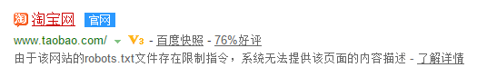
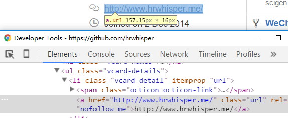

<!DOCTYPE html>


<html lang="en">


<head>
  <meta charset="utf-8" />
   
  <meta name="keywords" content="c,c++,java,python,leetcode,algorithm,reading,life,moods,machine-learning,data-mining,deep-learning,AI" />
   
  <meta name="description" content="一个分享机器学习、算法与数据结构，个人学习心得、读书笔记、生活的博客。" />
  
  <meta name="viewport" content="width=device-width, initial-scale=1, maximum-scale=1" />
  <title>
    SEO 基础 |  一个分享机器学习、算法与数据结构，个人学习心得、读书笔记、生活的博客。
  </title>
  <meta name="generator" content="hexo-theme-ayer">
  
  <link rel="shortcut icon" href="/favicon.ico" />
  
  
<link rel="stylesheet" href="/dist/main.css">

  
<link rel="stylesheet" href="https://cdn.jsdelivr.net/gh/Shen-Yu/cdn/css/remixicon.min.css">

  
<link rel="stylesheet" href="/css/custom.css">

  
  
<script src="https://cdn.jsdelivr.net/npm/pace-js@1.0.2/pace.min.js"></script>

  
  

  

</head>

</html>

<body>
  <div id="app">
    
      
    <main class="content on">
      <section class="outer">
  <article
  id="post-seo-theory"
  class="article article-type-post"
  itemscope
  itemprop="blogPost"
  data-scroll-reveal
>
  <div class="article-inner">
    
    <header class="article-header">
       
<h1 class="article-title sea-center" style="border-left:0" itemprop="name">
  SEO 基础
</h1>
 

    </header>
     
    <div class="article-meta">
      <a href="/seo-theory/" class="article-date">
  <time datetime="2015-12-17T15:00:19.000Z" itemprop="datePublished">2015-12-17</time>
</a> 
      
  <div class="article-category">
    <a class="article-category-link" href="/categories/others/">others</a> / <a class="article-category-link" href="/categories/others/%E5%BB%BA%E7%AB%99%E7%BB%8F%E9%AA%8C/">建站经验</a> / <a class="article-category-link" href="/categories/study/">study</a> / <a class="article-category-link" href="/categories/study/%E8%AE%A1%E7%AE%97%E6%9C%BA%E5%9F%BA%E7%A1%80/">计算机基础</a>
  </div>
 
       
        
<div class="word_count">
    <span class="post-time">
        <span class="post-meta-item-icon">
            <i class="ri-quill-pen-line"></i>
            <span class="post-meta-item-text"> Word count:</span>
            <span class="post-count">3.9k</span>
        </span>
    </span>

    <span class="post-time">
        &nbsp; | &nbsp;
        <span class="post-meta-item-icon">
            <i class="ri-book-open-line"></i>
            <span class="post-meta-item-text"> Reading time≈</span>
            <span class="post-count">14 min</span>
        </span>
    </span>
</div>

      
       
        <div class="word_count">
    <span class="post-meta-item-icon">
        <i class="ri-eye-fill"></i> 
        阅读数:<span id="/seo-theory/" data-flag-title="SEO 基础" class="leancloud_visitors">0</span>次
    </span>
</div>
      
    </div>
      
    <div class="tocbot"></div>


  
    <div class="article-entry" itemprop="articleBody">
       
  <h2 id="写在前面">写在前面</h2>
<p>为什么要学SEO？ 又不进行商业用途</p>
<ul>
<li>WEB开发的时候，你会更加的规范</li>
<li>知识上的扩充</li>
<li>让过多人看到你的博客站点</li>
</ul>
<a id="more"></a>
<h2 id="一些说明">一些说明</h2>
<ul>
<li>搜索引擎不喜欢flash和js生成的内容</li>
<li>跳转用301跳转，其他跳转如JS跳转，302跳转不建议使用</li>
<li>建议采用静态URL</li>
<li>搜索引擎一般把二级域名当作独立站点看</li>
<li>meta keywords tag 和 description tag 对排名一般没什么用</li>
<li>SEO需要付出时间</li>
<li><strong>SEO最根本的方法还是要提高网站内容质量</strong></li>
<li>不要在标题中加入搜索次数高，但与本页面无关的关键词</li>
<li>pagerank工具条已经不再更新，所以新站的PR值永远是0了</li>
<li>域名的年龄也是一个影响排名的因素</li>
</ul>
<p></p>
<h2 id="网站目标">网站目标</h2>
<p>需要了解网站的目标，如信息类网站靠显示广告赢利，网站目标是尽量增加页面访问数(PV)，电子商务网站，以在线销售为目标，电子商务网站希望的是能转化的高质量目标流量，关键词研究的重点在于挑选和优化最相关的、交易类的关键词。</p>
<p>博主博客则主要只是想提高自己的排名，让更多人看到这个站点，交到更多的朋友~</p>
<h2 id="爬取和收录">爬取和收录</h2>
<h3 id="Robots文件">Robots文件</h3>
<p>百度搜索淘宝网，会发现如下:</p>
<p></p>
<p>robots.txt是何方神圣？</p>
<p>搜索引擎访问任何一个网站到时候，都会先访问根目录下robots.txt文件。</p>
<p>robot.txt如果禁止搜索引擎抓取某些文件或目录，爬虫将遵守协议，不抓取被禁止的网址。</p>
<p>如下面的代码将禁止除google外所有搜索抓取任何内容</p>
<figure class="highlight plain"><table><tr><td class="gutter"><pre><span class="line">1</span><br><span class="line">2</span><br><span class="line">3</span><br><span class="line">4</span><br></pre></td><td class="code"><pre><span class="line">User-agent:  Googlebot</span><br><span class="line">Disallow:</span><br><span class="line">User-agent: *</span><br><span class="line">Disallow: &#x2F;</span><br></pre></td></tr></table></figure>
<p></p>
<h3 id="使用noindex-meata-robots标签">使用noindex meata robots标签</h3>
<p>如果你想禁止某些页面被收录，你可以：</p>
<figure class="highlight html"><table><tr><td class="gutter"><pre><span class="line">1</span><br></pre></td><td class="code"><pre><span class="line"><span class="tag">&lt;<span class="name">meta</span> <span class="attr">name</span>=<span class="string">&quot;robots&quot;</span> <span class="attr">content</span>=<span class="string">&quot;noindex&quot;</span>&gt;</span></span><br></pre></td></tr></table></figure>
<p><strong>noindex 和 robots.txt区别：前者是禁止收录，后者是禁止抓取</strong></p>
<h3 id="nofollow">nofollow</h3>
<figure class="highlight html"><table><tr><td class="gutter"><pre><span class="line">1</span><br></pre></td><td class="code"><pre><span class="line"><span class="tag">&lt;<span class="name">a</span> <span class="attr">href</span>=<span class="string">&quot;URL&quot;</span> <span class="attr">rel</span>=<span class="string">&quot;nofollow&quot;</span>&gt;</span></span><br></pre></td></tr></table></figure>
<p>比如github上个人主页：</p>
<p></p>
<p>nofollow标签用于告诉搜索引擎不要跟踪这个标签。</p>
<p>通常用于博客评论、论坛回帖上。</p>
<p>因为如果你的站点指向了垃圾站点，那么会影响你的网站的排名。而博客、论坛回帖可能有垃圾留言。用了nofollow能阻止搜索引擎的爬行和传递权重。</p>
<p>Nofollow 的另一个用途就是，在写文章并引用某个网站，但是并不想把您的权重传递给它。如揭发垃圾站点的时候。</p>
<p>PS：交换友情链接使用nofollow是无耻的行为。</p>
<h3 id="速度影响抓取">速度影响抓取</h3>
<p>网站来说，当下载页面所用的时间明显上升时，抓取的页面数量就极具下降。因为搜索引擎在一个特定的网站上爬行和抓取的总时间是有限的（除非网站规模小，用不完google给这个网站爬行的总时间）</p>
<h2 id="URL静态化">URL静态化</h2>
<p>网页内容一般都是由程序实时生成，而不是在服务器上真的有相应的HTML文件存在。搜索引擎一般不喜欢动态的URL，因为它可能造成大量重复的内容。</p>
<p>比如下面的两个URL，这两个仅仅是参数的不同，却会被认为是两个页面</p>
<p><a target="_blank" rel="noopener" href="http://xxx.com/a.php?color=blue&amp;id=123">xxx.com/a.php?color=blue&amp;id=123</a></p>
<p><a target="_blank" rel="noopener" href="http://xxx.com/a.php?id=123&amp;color=blue">xxx.com/a.php?id=123&amp;color=blue</a></p>
<h3 id="伪静态">伪静态</h3>
<p>一般静态化的方法是用服务器的URL重写模块（如果服务器是apache，那么就是mod_rewrite模块），这种方法叫做伪静态，因为它只是通过URL重写技术来让网址看起来像静态的。但对搜索引擎来说，真正的静态和伪静态没有区别。</p>
<p>wordpress在设置-固定链接可以设置伪静态的URL格式。</p>
<p>也可以通过修改 .htaccess 来自定义URL规则，包括301转向</p>
<h3 id="URL设计">URL设计</h3>
<ol>
<li>使用单词，最好包含关键词，或者描述性的词</li>
<li>越短越好，一个短的URL点击率比长的高2.5倍</li>
<li>百度尤其喜欢目录层次少的页面</li>
<li>不建议使用中文URL，否则会被base64编码，看起来就像乱码一样。</li>
<li>词和词之间用 - 隔开</li>
</ol>
<p></p>
<h2 id="301重定向">301重定向</h2>
<h3 id="什么是301重定向">什么是301重定向</h3>
<p>301重定向是服务器返回给用户/爬虫的HTTP响应报文的头部，说明本网址<strong>永久</strong>迁移到另一个地址。</p>
<p>其他常见状态码：</p>
<ul>
<li>200  OK</li>
<li>202 请求被接受，但处理尚未完成</li>
<li>301 redirect 重定向</li>
<li>302 临时性转向</li>
<li>400 由于语法格式有误，服务器无法理解此请求。 不作修改，客户程序就无法重复此请求。</li>
<li>401 未授权</li>
<li>403 禁止访问</li>
<li>404  页面未找到</li>
<li>5XX  服务器出错</li>
</ul>
<h3 id="为什么用301重定向">为什么用301重定向</h3>
<ul>
<li>除了301转向外，搜索引擎对其他的如JS转向，302转向很敏感，因为作弊者常用这些方法。</li>
<li>301重定向可以传递权重。B已经永久迁移到A站点，那么B的权重将累计到A</li>
</ul>
<h3 id="一些说明-2">一些说明</h3>
<ul>
<li>百度对301转向反应很慢。</li>
<li>可以用.hataccess 进行301重定向</li>
</ul>
<p></p>
<h2 id="重复内容的危害">重复内容的危害</h2>
<h3 id="产生重复内容的原因">产生重复内容的原因</h3>
<p>主要有:</p>
<ul>
<li>
<p>URL规范化没做好，如把404的重定向到首页（搜索引擎人为有大量和首页一样的页面）</p>
</li>
<li>
<p>被人转载和抄袭</p>
</li>
<li>
<p>镜像网站</p>
<ul>
<li>如七牛CDN的话，强烈建议用robot.txt禁止抓取</li>
</ul>
</li>
</ul>
<h3 id="危害">危害</h3>
<p>搜索引擎会从多个页面中尽量挑选出真正原创的版本，或者用户体验最好的版本，给予应有的排名，而其他复制的版本不再搜索结果中或者排在比较后面的位置。但搜索引擎来判断可能把本来是原创的页面判断成转载的内容，这使得原创内容排名不好，像被“惩罚”了一样。</p>
<h3 id="消除复制内容">消除复制内容</h3>
<p>同站下的复制内容如果是URL问题找出解决即可。下面只说明防止被复制和转载。</p>
<p>有的转载会表明出处，但是有的就不会。</p>
<p>可以加入版权信息：</p>
<figure class="highlight php"><table><tr><td class="gutter"><pre><span class="line">1</span><br><span class="line">2</span><br><span class="line">3</span><br><span class="line">4</span><br><span class="line">5</span><br><span class="line">6</span><br><span class="line">7</span><br></pre></td><td class="code"><pre><span class="line"><span class="keyword">echo</span> ‘本博客若无特殊说明则由 &lt;a href=”‘.get_site_url().<span class="string">&#x27;” title=”‘. get_the_author().&#x27;</span>”&gt;’. get_the_author() .<span class="string">&#x27;&lt;/a&gt; 原创发布&lt;br/&gt;’;</span></span><br><span class="line"><span class="string"></span></span><br><span class="line"><span class="string">echo ‘转载请点名出处：&lt;a href=”‘.get_site_url().&#x27;</span>” title=”‘.get_bloginfo().<span class="string">&#x27;”&gt;’ .get_bloginfo().&#x27;</span>&lt;/a&gt; &gt; ‘;</span><br><span class="line"></span><br><span class="line"><span class="keyword">echo</span> ‘&lt;a href=”‘.get_permalink().<span class="string">&#x27;” title=”‘.get_the_title().&#x27;</span>”&gt;’ .get_the_title().<span class="string">&#x27;&lt;/a&gt;&lt;br/&gt;’;</span></span><br><span class="line"><span class="string"></span></span><br><span class="line"><span class="string">echo ‘本文地址：&lt;a href=”‘.get_permalink().&#x27;</span>” title=”‘.get_the_title().<span class="string">&#x27;”&gt;’ .get_permalink().&#x27;</span>&lt;/a&gt;’;</span><br></pre></td></tr></table></figure>
<p>这样对于直接复制的网址（一般也是用爬虫抓取）就直接把这些版权信息抓过去了。对于搜索引擎来说，<strong>指向原处的链接是判断原创的最重要的信号。</strong></p>
<h2 id="站点地图">站点地图</h2>
<h3 id="sitemap和-Sitemap">sitemap和 Sitemap</h3>
<p>前者是html版本的，后者是XML版本的，就差了首字母大写。站点地图有助于用户对网站结构的了解，搜索引擎可以更容易地去发现并抓取网站上的内容。</p>
<p>XML只是辅助的方法，它只是通知搜索引擎这些页面的存在，并不一定被收录，所以良好的网页结构是更重要滴。</p>
<p>wordpress可以用 Yoast SEO插件来生成XML站点地图。</p>
<h3 id="robots-txt-中-sitemap">robots.txt 中 sitemap</h3>
<p>所有主流搜索引擎都支持robot.txt中指定网站站点地图的位置。</p>
<figure class="highlight plain"><table><tr><td class="gutter"><pre><span class="line">1</span><br><span class="line">2</span><br><span class="line">3</span><br><span class="line">4</span><br><span class="line">5</span><br><span class="line">6</span><br></pre></td><td class="code"><pre><span class="line">Sitemap: https:&#x2F;&#x2F;www.hrwhisper.me&#x2F;post-sitemap.xml</span><br><span class="line">Sitemap: https:&#x2F;&#x2F;www.hrwhisper.me&#x2F;post_tag-sitemap.xml</span><br><span class="line">Sitemap: https:&#x2F;&#x2F;www.hrwhisper.me&#x2F;category-sitemap.xml</span><br><span class="line">Sitemap: https:&#x2F;&#x2F;www.hrwhisper.me&#x2F;page-sitemap.xml</span><br><span class="line">User-agent: *</span><br><span class="line">Disallow: &#x2F;wp-admin&#x2F;</span><br></pre></td></tr></table></figure>
<p>参考  (<a target="_blank" rel="noopener" href="http://www.sitemaps.org/protocol.html#submit_robots">http://www.sitemaps.org/protocol.html#submit_robots</a>)&gt;</p>
<h3 id="在站长工具提交站点地图">在站长工具提交站点地图</h3>
<p>先注册账号-验证网站所有权-上传Sitemaps（有的可能需要申请，如搜狗）</p>
<ul>
<li><a target="_blank" rel="noopener" href="https://www.google.co.jp/url?sa=t&amp;rct=j&amp;q=&amp;esrc=s&amp;source=web&amp;cd=1&amp;cad=rja&amp;uact=8&amp;ved=0ahUKEwiss6iI99jJAhXRcI4KHbuJBSwQFggdMAA&amp;url=https%3A%2F%2Fwww.google.com%2Fwebmasters%2Ftools&amp;usg=AFQjCNHqwDOfb6H9OJMj1ATaXnSnHDCleg">google</a></li>
<li><a target="_blank" rel="noopener" href="http://www.bing.com/toolbox/webmaster/">bing</a></li>
<li><a target="_blank" rel="noopener" href="http://zhanzhang.baidu.com/?castk=LTE%3D">baidu</a></li>
<li><a target="_blank" rel="noopener" href="http://zhanzhang.haosou.com/">360</a></li>
<li><a target="_blank" rel="noopener" href="http://zhanzhang.sogou.com/index.php/site/index">sougou</a></li>
</ul>
<p></p>
<h2 id="页面优化">页面优化</h2>
<ul>
<li>建议title紧接在<code>&lt;head&gt;</code>后，这样搜索引擎就可以快速找到title标签</li>
<li>可以使用google 站长工具 搜索外观-HTML建议部分查看需要改进的地方</li>
<li>为每个网页创建独特的标题标签，如分页中可以在标题前加入第X页来区别，如第二页-标题  第三天页-标题</li>
<li><strong>描述标签对关键词排名没有影响，但对点击率有一定的影响。（因为可能被拿来做搜索页的摘要）</strong></li>
<li>关键词标签现在没卵用，不建议浪费时间写</li>
</ul>
<p></p>
<h2 id="正文优化">正文优化</h2>
<p><strong>wordpress 插件YOAST SEO</strong> 在编辑文章的时候会给出优化建议</p>
<ul>
<li>
<p>篇幅不大的页面出现两三次关键词即可，长的出现4~6次，不要堆积关键词。</p>
</li>
<li>
<p>正文前50~100个词中有较高的权重</p>
</li>
<li>
<p>要关注关键词的变化形式，如近义词</p>
</li>
<li>
<p>合理利用图片ALT文字</p>
<ul>
<li>最好文件名和 alt 文本是简短而描述性很强</li>
<li>当图片作为链接使用时，一定要提供 alt 文本（切忌过长）</li>
</ul>
</li>
<li>
<p>合理使用H标签使得文章层次分明</p>
</li>
<li>
<p>自然写作，其实优化就差不多了，只要有意识的想一下近义词即可。</p>
</li>
</ul>
<p></p>
<h2 id="W3C验证">W3C验证</h2>
<p>一般同不通过对页面排名没有明显的影响。实际上绝大部分页面都无法百分百的通过W3C验证。搜索引擎也明白这一点。</p>
<p>所以，尽量更正验证报告中的错误，警告可以忽略。</p>
<p>W3C验证地址：  <a target="_blank" rel="noopener" href="https://validator.w3.org/">https://validator.w3.org/</a></p>
<p>ps:博主blog除了个别多说评论页面有表情的提示无alt属性没通过验证外，其他的均通过W3C验证。</p>
<h2 id="链接建设">链接建设</h2>
<h3 id="锚文字">锚文字</h3>
<p>先介绍基本概念，锚文字。</p>
<figure class="highlight plain"><table><tr><td class="gutter"><pre><span class="line">1</span><br></pre></td><td class="code"><pre><span class="line">&lt;a href&#x3D;&quot;https:&#x2F;&#x2F;www.hrwhisper.me&#x2F;&quot; &gt;细语呢喃&lt;&#x2F;a&gt;</span><br></pre></td></tr></table></figure>
<p>这里的“细语呢喃”就是锚文字。</p>
<h3 id="内部链接">内部链接</h3>
<p>选择描述性文字——您选择的用作链接的锚文本应该至少能够提供被链接页面 的基本信息。</p>
<p>避免如下情况：</p>
<ul>
<li>使用与目标页面主题无关的锚文字，比如“页面”、“文章”或是“点击这里”</li>
<li>直接使用页面的 URL 作为锚文本（只有少数情况下，这样的方法是 合适的，比如推广或者是引用了某个网址）</li>
<li>用一个长句子或是一篇短文来实现的过长的锚文本</li>
</ul>
<p></p>
<h3 id="外部链接">外部链接</h3>
<p>外部链接使得被链接的页面及整个域名权重提高，外部链接越多，发出链接的网站本身权重越高，说明链接的页面受更多人信任，该域名就有更多的权重。</p>
<p>权重和信任度与特定关键词或主题没有直接关系。如果你的网站有来自央视、百度、清华大学、华尔街日报这种权重极高网站的链接，你的网站的权重会有质的提升，不管网站目标关键词是什么，排名都会有帮助。</p>
<ul>
<li>外部链接也可以叫做反向链接</li>
<li><strong>质量比数量更重要</strong></li>
<li><strong>总域名数比总链接数的作用更大</strong></li>
<li>来自相关内容的链接网站对排名的帮助更大</li>
<li>反向链接增加的速度不宜过快</li>
<li>来自edu、gov域名的权重高</li>
<li>开放目录。将网站提交到高质量的目录上，能带来不错的外部链接</li>
</ul>
<p><strong>我觉得好的链接应该是对方站长编辑的行为，比如他认为你的博文有用，在他的文章正文中进行引用，这才是真正的投票。而友情链接带来的权重低很多。</strong></p>
<p>吸引外部链接的几种途径</p>
<ul>
<li>自己的网站</li>
<li>博客论坛留言</li>
<li>百科和问答类网站</li>
<li>网摘书签 如（<a target="_blank" rel="noopener" href="http://delicious.com">delicious.com</a> QQ书签 百度搜藏 Google书签） 现在大部分由nofollow</li>
<li>查看别人的外部链接</li>
<li>CMS主题模板 （如wordpress主题）</li>
<li>社会化媒体网站（如豆瓣、知乎、新浪微博 ，大部分由nofollow）</li>
</ul>
<p></p>
<h2 id="SEO效果监测">SEO效果监测</h2>
<p>主要监测下面三项，看看优化后是否有效果</p>
<ul>
<li>收录数</li>
<li>外链数</li>
<li>关键词的排名</li>
</ul>
<p></p>
<h2 id="SEO作弊及惩罚">SEO作弊及惩罚</h2>
<h3 id="白帽、黑帽、灰帽">白帽、黑帽、灰帽</h3>
<ul>
<li>黑帽(Blackhat)：作弊方式的SEO方法，不符合搜索引擎质量规范</li>
<li>白帽(Whitehat)：符合搜索引擎网站质量规范的SEO</li>
<li>灰帽SEO(Greyhat)：介于白帽和黑帽之间的优化方法</li>
</ul>
<p></p>
<h3 id="黑帽的手法">黑帽的手法</h3>
<p><strong>黑帽SEO迟早被搜索引擎惩罚，不要使用这种方法。</strong></p>
<p>黑帽包括如下：</p>
<ul>
<li>隐藏文字： 如和背景颜色相近或相同的文字，来堆积关键词</li>
<li>隐藏页面：用户和搜索引擎看到的不是一个页面，搜索引擎看到的是一个高度优化、常常优化到没有可读性的页面。</li>
<li>隐藏链接：如黑入其他网站，加入自己网站的链接</li>
<li>垃圾链接：如博客评论里锚链接使用商品名称作为关键词。 =&gt;Akismet插件</li>
<li>买卖链接：搜索引擎明确十分痛恨这种行为，一旦被查到。。。</li>
<li>链接农场/大规模站群：一个站长有一群网站，这些网站互相交叉链接。或者用这些网站共同推一个主网站</li>
<li>链接到坏邻居：自己的网站链接到被判断出作弊并被惩罚的网站，可能被牵连。</li>
</ul>
<p></p>
<h3 id="搜索引擎的惩罚方式">搜索引擎的惩罚方式</h3>
<ul>
<li>惩罚主要的关键词</li>
<li>所有的关键词排名全面下降</li>
<li>PR值下降</li>
<li>负6惩罚，负30，负950（排名下降的固定名次）</li>
<li>如果一个IP地址上的大部分网站都被惩罚，那么这个IP地址或整个服务器可能被牵连（虽然比较少见），所以独立IP比共享IP好。</li>
</ul>
<p></p>
<h2 id="Google和百度的区别">Google和百度的区别</h2>
<ul>
<li>Google很容易收录新网站和新页面，不过Google有沙盒效应，收录门槛很低，获得好的排名比较难。百度对于新网站考核期长，不容易被收录。而一旦被收录，比较容易获得排名和流量。网站刚开始时的原创性对百度来说比较重要。</li>
<li>百度有比较大的首页优势，而Google对所有页面一视同仁，不管是首页还是内页。</li>
<li>Google对外部链接比较重视。对关键词反而没有那么敏感。百度相反。</li>
<li>百度排名经常有大起大落。而Google对网站的排名处理总是渐进式的。</li>
<li>百度对网站更新比较看重。google除非是有时效性的网站外，没有多大要求。</li>
<li>Google现在会读取、解析js和css文件，渲染出和用户看到的一样的页面内容和布局。</li>
</ul>
<p></p>
<h2 id="移动适配">移动适配</h2>
<p>可以简历专用的和PC版不一样的URL，但还是推荐响应式设计（也叫自适应设计 responsive design）。</p>
<ul>
<li>wordpress_如果主题没有响应式，可以安装 wptouch</li>
</ul>
<p>移动自适应站百度建议加上以下标志，帮助百度理解页面适用于PC和手机</p>
<figure class="highlight plain"><table><tr><td class="gutter"><pre><span class="line">1</span><br></pre></td><td class="code"><pre><span class="line">&lt;meta name&#x3D;&quot;applicable-device&quot;content&#x3D;&quot;pc,mobile&quot;&gt;</span><br></pre></td></tr></table></figure>
<h2 id="参考资料">参考资料</h2>
<ul>
<li>
<p><a target="_blank" rel="noopener" href="http://www.google.com.hk/url?sa=t&amp;source=web&amp;cd=1&amp;ved=0CCgQFjAA&amp;url=http%3A%2F%2Fwww.google.com%2Fwebmasters%2Fdocs%2Fsearch-engine-optimization-starter-guide.pdf&amp;ei=cDCtTf31G5CmuAO7u6jcCg&amp;usg=AFQjCNEMj8KHxhxQz9cMLoMxMDiLdrAbJw&amp;sig2=HZhP2MQXYGKjO52CxLm6Tw">Google Search Engine Optimization Starter Guide</a></p>
<ul>
<li>汉化版 ：<a target="_blank" rel="noopener" href="http://pan.baidu.com/s/1c0NvJuo">http://pan.baidu.com/s/1c0NvJuo</a> 密码：miix</li>
</ul>
</li>
<li>
<p><a target="_blank" rel="noopener" href="http://wenku.baidu.com/view/ec4457d4b14e852458fb5793.html">百度搜索引擎优化指南</a></p>
</li>
<li>
<p>《SEO 实战密码 第3版》 Zac</p>
<ul>
<li>很详细，虽然有些现在过时的内容。</li>
</ul>
</li>
</ul>
<p></p>
<p>可以看 <a target="_blank" rel="noopener" href="https://www.hrwhisper.me/seo-in-action/">本博客的SEO实战记录</a></p>
 
      <!-- reward -->
      
      <div id="reword-out">
        <div id="reward-btn">
          Donate
        </div>
      </div>
      
    </div>
    

    <!-- copyright -->
    
    <div class="declare">
      <ul class="post-copyright">
        <li>
          <i class="ri-copyright-line"></i>
          <strong>Copyright： </strong>
          
          Copyright is owned by the author. For commercial reprints, please contact the author for authorization. For non-commercial reprints, please indicate the source.
          
        </li>
      </ul>
    </div>
    
    <footer class="article-footer">
       
<div class="share-btn">
      <span class="share-sns share-outer">
        <i class="ri-share-forward-line"></i>
        分享
      </span>
      <div class="share-wrap">
        <i class="arrow"></i>
        <div class="share-icons">
          
          <a class="weibo share-sns" href="javascript:;" data-type="weibo">
            <i class="ri-weibo-fill"></i>
          </a>
          <a class="weixin share-sns wxFab" href="javascript:;" data-type="weixin">
            <i class="ri-wechat-fill"></i>
          </a>
          <a class="qq share-sns" href="javascript:;" data-type="qq">
            <i class="ri-qq-fill"></i>
          </a>
          <a class="douban share-sns" href="javascript:;" data-type="douban">
            <i class="ri-douban-line"></i>
          </a>
          <!-- <a class="qzone share-sns" href="javascript:;" data-type="qzone">
            <i class="icon icon-qzone"></i>
          </a> -->
          
          <a class="facebook share-sns" href="javascript:;" data-type="facebook">
            <i class="ri-facebook-circle-fill"></i>
          </a>
          <a class="twitter share-sns" href="javascript:;" data-type="twitter">
            <i class="ri-twitter-fill"></i>
          </a>
          <a class="google share-sns" href="javascript:;" data-type="google">
            <i class="ri-google-fill"></i>
          </a>
        </div>
      </div>
</div>

<div class="wx-share-modal">
    <a class="modal-close" href="javascript:;"><i class="ri-close-circle-line"></i></a>
    <p>扫一扫，分享到微信</p>
    <div class="wx-qrcode">
      
    </div>
</div>

<div id="share-mask"></div>  
  <ul class="article-tag-list" itemprop="keywords"><li class="article-tag-list-item"><a class="article-tag-list-link" href="/tags/SEO/" rel="tag">SEO</a></li></ul>

    </footer>
  </div>

   
  <nav class="article-nav">
    
      <a href="/seo-in-action/" class="article-nav-link">
        <strong class="article-nav-caption">上一篇</strong>
        <div class="article-nav-title">
          
            本博客 SEO实战记录
          
        </div>
      </a>
    
    
      <a href="/leetcode-maximum-product-of-word-lengths/" class="article-nav-link">
        <strong class="article-nav-caption">下一篇</strong>
        <div class="article-nav-title">leetcode Maximum Product of Word Lengths</div>
      </a>
    
  </nav>

   
<!-- valine评论 -->
<div id="vcomments-box">
  <div id="vcomments"></div>
</div>
<script src="//cdn1.lncld.net/static/js/3.0.4/av-min.js"></script>
<script src="https://cdn.jsdelivr.net/npm/valine@1.4.14/dist/Valine.min.js"></script>
<script>
  new Valine({
    el: "#vcomments",
    app_id: "fVcjWMD8aI6F0qEfKdUaHa4f-gzGzoHsz",
    app_key: "b26lBsbwmVyxTSnNrsBrnv3U",
    path: window.location.pathname,
    avatar: "monsterid",
    placeholder: "给我的文章加点评论吧~",
    recordIP: true,
  });
  const infoEle = document.querySelector("#vcomments .info");
  if (infoEle && infoEle.childNodes && infoEle.childNodes.length > 0) {
    infoEle.childNodes.forEach(function (item) {
      item.parentNode.removeChild(item);
    });
  }
</script>
<style>
  #vcomments-box {
    padding: 5px 30px;
  }

  @media screen and (max-width: 800px) {
    #vcomments-box {
      padding: 5px 0px;
    }
  }

  #vcomments-box #vcomments {
    background-color: #fff;
  }

  .v .vlist .vcard .vh {
    padding-right: 20px;
  }

  .v .vlist .vcard {
    padding-left: 10px;
  }
</style>

 
     
</article>

</section>
      <footer class="footer">
  <div class="outer">
    <ul>
      <li>
        Copyrights &copy;
        2013-2020
        <i class="ri-heart-fill heart_icon"></i> hrwhisper
      </li>
    </ul>
    <ul>
      <li>
        
        
        
        Powered by <a href="https://hexo.io" target="_blank">Hexo</a>
        <span class="division">|</span>
        Theme - <a href="https://github.com/Shen-Yu/hexo-theme-ayer" target="_blank">Ayer</a>
        
      </li>
    </ul>
    <ul>
      <li>
        
        
        <span>
  <span><i class="ri-user-3-fill"></i>Visitors:<span id="busuanzi_value_site_uv"></span></s>
  <span class="division">|</span>
  <span><i class="ri-eye-fill"></i>Views:<span id="busuanzi_value_page_pv"></span></span>
</span>
        
      </li>
    </ul>
    <ul>
      
    </ul>
    <ul>
      
    </ul>
    <ul>
      <li>
        <!-- cnzz统计 -->
        
      </li>
    </ul>
  </div>
</footer>

 
  <script src="https://cdn.bootcss.com/jquery/3.2.1/jquery.min.js"></script>
<script src="//cdn1.lncld.net/static/js/2.5.0/av-min.js"></script>
<script type="text/javascript">
var leancloud_app_id  = 'fVcjWMD8aI6F0qEfKdUaHa4f-gzGzoHsz';
var leancloud_app_key = 'b26lBsbwmVyxTSnNrsBrnv3U';

AV.init({
    appId: leancloud_app_id,
    appKey: leancloud_app_key
});

// https://leancloud.cn/docs/leanstorage_guide-js.html#hash1873238850
function showTime(Counter) {
  console.log("show time");
	let query = new AV.Query(Counter);
  query.greaterThanOrEqualTo("time", 0);		
  query.find().then((results) => {
      if (results.length > 0) {
        let data = results;
        $('.leancloud_visitors').each(function() {
          let url = $(this).attr('id').trim();		
          for (let i = 0; i < data.length; i++) {
            let object = data[i];
            let content = object.get('time');
            let _url = object.get('url');
            if(url == _url){
              $(this).text(content);
            }
          }
        });
      }
  });
}

function addCount(Counter) {
  const obj = $(".leancloud_visitors");
	url = obj.attr('id').trim();
  title = obj.attr('data-flag-title').trim();

  const query = new AV.Query('Counter');
  query.equalTo("url", url);

	query.find().then((results) => {
			if (results.length > 0) {
				var counter = results[0];
				counter.increment("time", 1);
				counter.save(null, {fetchWhenSave: true}).then(() => {
          let content = counter.get('time');
          $(document.getElementById(url)).text(content);
        }, (error)=> {
						console.log('Failed to save Visitor num, with error message: ' + error.message);
        });
			} else {
				var newcounter = new Counter();
				newcounter.set("title", title);
				newcounter.set("url", url);
        newcounter.set("time", 1);
        newcounter.save(null, {fetchWhenSave: true}).then(() => {
          var content = newcounter.get('time');
          $(document.getElementById(url)).text(content);
        }, (error)=> {
          console.log('Failed to create' + error.message);
        });
			}
	});
}

$(function() {
  var Counter = AV.Object.extend("Counter");
	if ($('.leancloud_visitors').length == 1) {
		addCount(Counter);
	} else {
	  showTime(Counter);
  }
}); 
</script>


      <div class="float_btns">
        <div class="totop" id="totop">
  <i class="ri-arrow-up-line"></i>
</div>

<div class="todark" id="todark">
  <i class="ri-moon-line"></i>
</div>

      </div>
    </main>
    <aside class="sidebar on">
      <button class="navbar-toggle"></button>
<nav class="navbar">
  
  <div class="logo">
    <a href="/"></a>
  </div>
  
  <ul class="nav nav-main">
    
    <li class="nav-item">
      <a class="nav-item-link" href="/">主页</a>
    </li>
    
    <li class="nav-item">
      <a class="nav-item-link" href="/archives">归档</a>
    </li>
    
    <li class="nav-item">
      <a class="nav-item-link" href="/categories">分类</a>
    </li>
    
    <li class="nav-item">
      <a class="nav-item-link" href="/tags">标签</a>
    </li>
    
    <li class="nav-item">
      <a class="nav-item-link" href="/blog-building">博客建设</a>
    </li>
    
    <li class="nav-item">
      <a class="nav-item-link" href="/friend-link">友链</a>
    </li>
    
    <li class="nav-item">
      <a class="nav-item-link" href="/leetcode-algorithm-solution">leetcode题解</a>
    </li>
    
    <li class="nav-item">
      <a class="nav-item-link" href="/messageboard">留言板</a>
    </li>
    
    <li class="nav-item">
      <a class="nav-item-link" href="/about-me">关于我</a>
    </li>
    
  </ul>
</nav>
<nav class="navbar navbar-bottom">
  <ul class="nav">
    <li class="nav-item">
      
      <a class="nav-item-link nav-item-search"  title="Search">
        <i class="ri-search-line"></i>
      </a>
      
      
    </li>
  </ul>
</nav>
<div class="search-form-wrap">
  <div class="local-search local-search-plugin">
  <input type="search" id="local-search-input" class="local-search-input" placeholder="Search...">
  <div id="local-search-result" class="local-search-result"></div>
</div>
</div>
    </aside>
    <script>
      if (window.matchMedia("(max-width: 768px)").matches) {
        document.querySelector('.content').classList.remove('on');
        document.querySelector('.sidebar').classList.remove('on');
      }
    </script>
    <div id="mask"></div>

<!-- #reward -->
<div id="reward">
  <span class="close"><i class="ri-close-line"></i></span>
  <p class="reward-p"><i class="ri-cup-line"></i>请我喝杯咖啡吧~</p>
  <div class="reward-box">
    
    <div class="reward-item">
      
      <span class="reward-type">支付宝</span>
    </div>
    
    
    <div class="reward-item">
      
      <span class="reward-type">微信</span>
    </div>
    
  </div>
</div>
    
<script src="/js/jquery-2.0.3.min.js"></script>


<script src="/js/lazyload.min.js"></script>

<!-- Tocbot -->


<script src="/js/tocbot.min.js"></script>

<script>
  tocbot.init({
    tocSelector: '.tocbot',
    contentSelector: '.article-entry',
    headingSelector: 'h1, h2, h3',
    hasInnerContainers: true,
    scrollSmooth: false,
	  scrollSmoothDuration: 420,
    scrollContainer: 'main',
    positionFixedSelector: '.tocbot',
    positionFixedClass: 'is-position-fixed',
    fixedSidebarOffset: 'auto',
	collapseDepth: 2,
  });
</script>

<script src="https://cdn.jsdelivr.net/npm/jquery-modal@0.9.2/jquery.modal.min.js"></script>
<link rel="stylesheet" href="https://cdn.jsdelivr.net/npm/jquery-modal@0.9.2/jquery.modal.min.css">
<script src="https://cdn.jsdelivr.net/npm/justifiedGallery@3.7.0/dist/js/jquery.justifiedGallery.min.js"></script>

<script src="/dist/main.js"></script>

<!-- ImageViewer -->

<!-- Root element of PhotoSwipe. Must have class pswp. -->
<div class="pswp" tabindex="-1" role="dialog" aria-hidden="true">

    <!-- Background of PhotoSwipe. 
         It's a separate element as animating opacity is faster than rgba(). -->
    <div class="pswp__bg"></div>

    <!-- Slides wrapper with overflow:hidden. -->
    <div class="pswp__scroll-wrap">

        <!-- Container that holds slides. 
            PhotoSwipe keeps only 3 of them in the DOM to save memory.
            Don't modify these 3 pswp__item elements, data is added later on. -->
        <div class="pswp__container">
            <div class="pswp__item"></div>
            <div class="pswp__item"></div>
            <div class="pswp__item"></div>
        </div>

        <!-- Default (PhotoSwipeUI_Default) interface on top of sliding area. Can be changed. -->
        <div class="pswp__ui pswp__ui--hidden">

            <div class="pswp__top-bar">

                <!--  Controls are self-explanatory. Order can be changed. -->

                <div class="pswp__counter"></div>

                <button class="pswp__button pswp__button--close" title="Close (Esc)"></button>

                <button class="pswp__button pswp__button--share" style="display:none" title="Share"></button>

                <button class="pswp__button pswp__button--fs" title="Toggle fullscreen"></button>

                <button class="pswp__button pswp__button--zoom" title="Zoom in/out"></button>

                <!-- Preloader demo http://codepen.io/dimsemenov/pen/yyBWoR -->
                <!-- element will get class pswp__preloader--active when preloader is running -->
                <div class="pswp__preloader">
                    <div class="pswp__preloader__icn">
                        <div class="pswp__preloader__cut">
                            <div class="pswp__preloader__donut"></div>
                        </div>
                    </div>
                </div>
            </div>

            <div class="pswp__share-modal pswp__share-modal--hidden pswp__single-tap">
                <div class="pswp__share-tooltip"></div>
            </div>

            <button class="pswp__button pswp__button--arrow--left" title="Previous (arrow left)">
            </button>

            <button class="pswp__button pswp__button--arrow--right" title="Next (arrow right)">
            </button>

            <div class="pswp__caption">
                <div class="pswp__caption__center"></div>
            </div>

        </div>

    </div>

</div>

<link rel="stylesheet" href="https://cdn.jsdelivr.net/npm/photoswipe@4.1.3/dist/photoswipe.min.css">
<link rel="stylesheet" href="https://cdn.jsdelivr.net/npm/photoswipe@4.1.3/dist/default-skin/default-skin.min.css">
<script src="https://cdn.jsdelivr.net/npm/photoswipe@4.1.3/dist/photoswipe.min.js"></script>
<script src="https://cdn.jsdelivr.net/npm/photoswipe@4.1.3/dist/photoswipe-ui-default.min.js"></script>

<script>
    function viewer_init() {
        let pswpElement = document.querySelectorAll('.pswp')[0];
        let $imgArr = document.querySelectorAll(('.article-entry img:not(.reward-img)'))

        $imgArr.forEach(($em, i) => {
            $em.onclick = () => {
                // slider展开状态
                // todo: 这样不好，后面改成状态
                if (document.querySelector('.left-col.show')) return
                let items = []
                $imgArr.forEach(($em2, i2) => {
                    let img = $em2.getAttribute('data-idx', i2)
                    let src = $em2.getAttribute('data-target') || $em2.getAttribute('src')
                    let title = $em2.getAttribute('alt')
                    // 获得原图尺寸
                    const image = new Image()
                    image.src = src
                    items.push({
                        src: src,
                        w: image.width || $em2.width,
                        h: image.height || $em2.height,
                        title: title
                    })
                })
                var gallery = new PhotoSwipe(pswpElement, PhotoSwipeUI_Default, items, {
                    index: parseInt(i)
                });
                gallery.init()
            }
        })
    }
    viewer_init()
</script>

<!-- MathJax -->

<script type="text/x-mathjax-config">
  MathJax.Hub.Config({
      tex2jax: {
          inlineMath: [ ['$','$'], ["\\(","\\)"]  ],
          processEscapes: true,
          skipTags: ['script', 'noscript', 'style', 'textarea', 'pre', 'code']
      }
  });

  MathJax.Hub.Queue(function() {
      var all = MathJax.Hub.getAllJax(), i;
      for(i=0; i < all.length; i += 1) {
          all[i].SourceElement().parentNode.className += ' has-jax';
      }
  });
</script>

<script src="https://cdn.jsdelivr.net/npm/mathjax@2.7.6/unpacked/MathJax.js?config=TeX-AMS-MML_HTMLorMML"></script>
<script>
  var ayerConfig = {
    mathjax: true
  }
</script>

<!-- Katex -->

<!-- busuanzi  -->


<script src="/js/busuanzi-2.3.pure.min.js"></script>


<!-- ClickLove -->

<!-- ClickBoom1 -->

<!-- ClickBoom2 -->

<!-- CodeCopy -->


<link rel="stylesheet" href="/css/clipboard.css">

<script src="https://cdn.jsdelivr.net/npm/clipboard@2/dist/clipboard.min.js"></script>
<script>
  function wait(callback, seconds) {
    var timelag = null;
    timelag = window.setTimeout(callback, seconds);
  }
  !function (e, t, a) {
    var initCopyCode = function(){
      var copyHtml = '';
      copyHtml += '<button class="btn-copy" data-clipboard-snippet="">';
      copyHtml += '<i class="ri-file-copy-2-line"></i><span>COPY</span>';
      copyHtml += '</button>';
      $(".highlight .code pre").before(copyHtml);
      $(".article pre code").before(copyHtml);
      var clipboard = new ClipboardJS('.btn-copy', {
        target: function(trigger) {
          return trigger.nextElementSibling;
        }
      });
      clipboard.on('success', function(e) {
        let $btn = $(e.trigger);
        $btn.addClass('copied');
        let $icon = $($btn.find('i'));
        $icon.removeClass('ri-file-copy-2-line');
        $icon.addClass('ri-checkbox-circle-line');
        let $span = $($btn.find('span'));
        $span[0].innerText = 'COPIED';
        
        wait(function () { // 等待两秒钟后恢复
          $icon.removeClass('ri-checkbox-circle-line');
          $icon.addClass('ri-file-copy-2-line');
          $span[0].innerText = 'COPY';
        }, 2000);
      });
      clipboard.on('error', function(e) {
        e.clearSelection();
        let $btn = $(e.trigger);
        $btn.addClass('copy-failed');
        let $icon = $($btn.find('i'));
        $icon.removeClass('ri-file-copy-2-line');
        $icon.addClass('ri-time-line');
        let $span = $($btn.find('span'));
        $span[0].innerText = 'COPY FAILED';
        
        wait(function () { // 等待两秒钟后恢复
          $icon.removeClass('ri-time-line');
          $icon.addClass('ri-file-copy-2-line');
          $span[0].innerText = 'COPY';
        }, 2000);
      });
    }
    initCopyCode();
  }(window, document);
</script>


<!-- CanvasBackground -->


    
  </div>
</body>

</html>